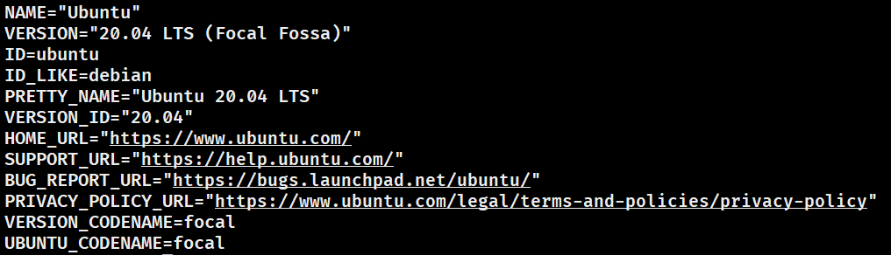
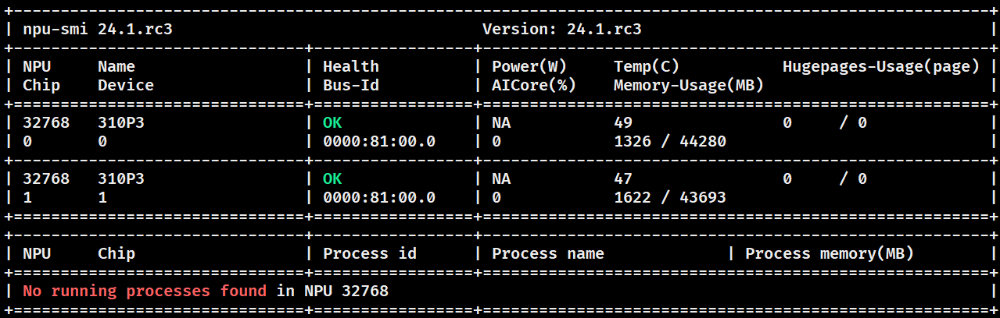
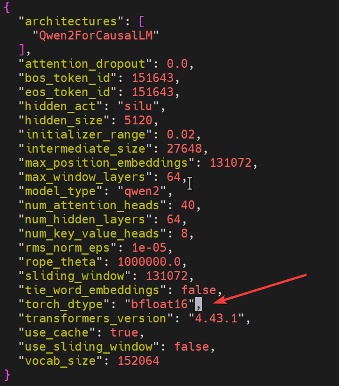
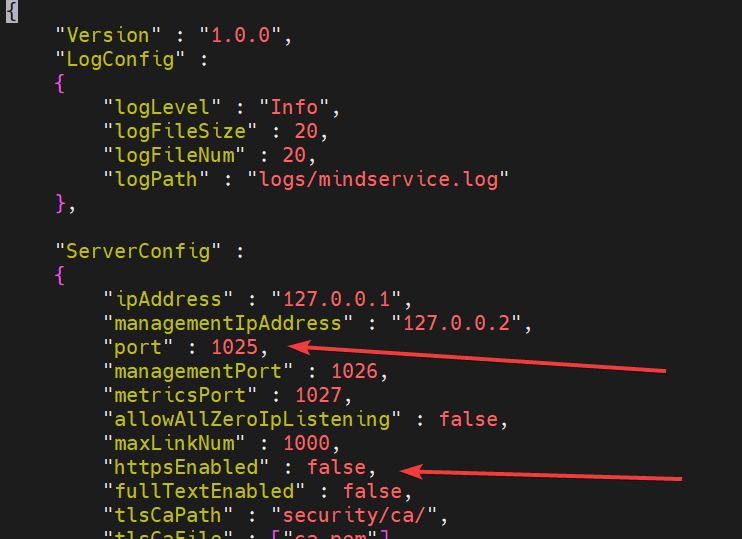
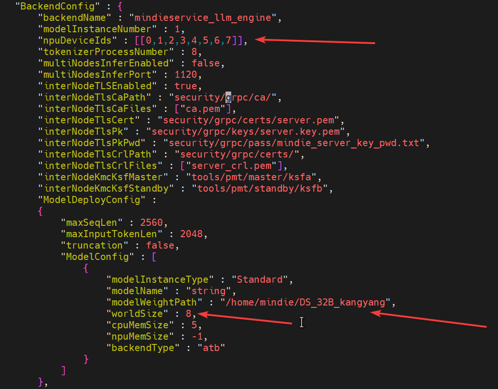
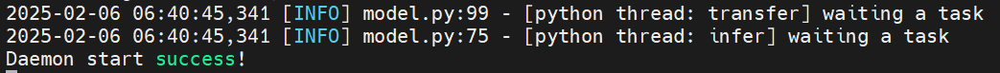

在华为300iDUO推理卡平台上用MindIE进行DeepSeek R1蒸馏模型部署
服务器信息:
- 系统信息

- npu信息

使用该Docker镜像
启动docker镜像:
docker run -it --ipc=host --device=/dev/davinci0 --device=/dev/davinci1 --device=/dev/davinci_manager --device=/dev/devmm_svm --device=/dev/hisi_hdc -v /usr/local/Ascend/driver:/usr/local/Ascend/driver -v /usr/local/Ascend/add-ons/:/usr/local/Ascend/add-ons/ -v /usr/local/sbin/npu-smi:/usr/local/sbin/npu-smi -v /usr/local/sbin/:/usr/local/sbin/ -v /var/log/npu/:/usr/slog -v /home/baixin/lq2:/home/HwHiAiUser mindie:1.0.0-T71.B020-300I-Duo-arm64-py3.11 /bin/bash
模型参数文件需修改权限模式和目录所有者
把模型参数文件下载到服务器中
使用命令修改模型目录的所有者和权限模式, 这里以DeepSeek-R1-Distill-Qwen-32B为例
chown -R root:root DeepSeek-R1-Distill-Qwen-32B
chmod -R 750 DeepSeek-R1-Distill-Qwen-32B
进入DeepSeek-R1-Distill-Qwen-32B, 修改其中的config.json文件, 将其中torch_dtype项改为float16, 如图中箭头所指的项

进行mindie-servier服务推理
修改mindie-servier配置:
# 进入到mindie-server目录下；
cd /usr/local/Ascend/mindie/latest/mindie-service
# 修改 config.json 文件，首先打开该文件
vi conf/config.json
修改以下项:
- httpsEnable 设为false
- numDeviceIds 设为你想使用的卡的id
- worldSize 设为卡数
- modelWeightPath设为你的模型参数目录路径
注意modelName要和请求时用到的model名相同


这些参数可以在配置参数说明-MindIE Server-MindIE Service组件-MindIE Service开发指南-服务化集成部署-MindIE1.0.RC3开发文档-昇腾社区找到说明
启动 mindie-server 服务
根据上面的config.json可以看到, 服务会启动在 http://127.0.0.1:1025 ，用户可通过在config.json文件下修改ipAddress和port参数来自定义启动IP地址与端口号。
启动命令:
cd /usr/local/Ascend/mindie/latest/mindie-service
# 启动服务并将日志输入到 output.log文件中
nohup ./bin/mindieservice_daemon > output.log 2>&1 &
# 可通过如下命令查看日志
tail -f output.log
启动, 如果有以下内容则启动成功

启用服务后在另一个终端页面，参考以下指令进行mindie server本机端口访问：
注：以下命令中model参数需与/usr/local/Ascend/mindie/latest/mindie-service/conf/config.json文件中modelName保持一致，id参数可进行自定义，其中的问答内容根据自己应用领域修改
curl -H "Accept: application/json" -H "Content-type: application/json" -X POST -d '{
"id":"test-01",
"model": "string",
"messages": [{
"role": "system",
"content": "如何治理空气污染"
}
],
"max_tokens": 200,
"presence_penalty": 1.03,
"frequency_penalty": 1.0,
"seed": null,
"temperature": 0.5,
"top_p": 0.95,
"stream": false
}' http://127.0.0.1:1025/v1/chat/completions
测试模型tps:
import requests
def benchmark(backend_url, prompt, temperature, top_p):
headers = {"Content-Type": "application/json"}
data = {
"model": "string",
"messages": [{"role": "user", "content": prompt}],
"temperature": temperature,
"top_p": top_p,
"do_sample": True
}
total_time = 0
total_tokens = 0
for _ in range(5):
response = requests.post(backend_url, json=data, headers=headers)
result = response.json()
# 计算总时间（预填充时间 + 解码总时间）
total_inference_time = (sum(result.get('decode_time_arr', [])) + result.get('prefill_time', 0)) / 1000
completion_tokens = result['usage']['completion_tokens']
total_time += total_inference_time
total_tokens += completion_tokens
avg_tps = total_tokens / total_time
return avg_tps
def main():
test_prompts = [
"人工智能在医疗诊断领域有哪些应用和挑战？",
"区块链技术是如何保障数据安全和不可篡改的？",
"简述大数据处理中的数据清洗和特征工程的重要性。",
"虚拟现实（VR）和增强现实（AR）技术的区别和联系是什么？",
"谈谈机器学习中的监督学习和无监督学习的区别。"
]
url = "http://localhost:1025/v1/chat/completions"
parameters = [
(0.2, 0.8),
(0.5, 0.9),
(0.7, 0.95)
]
tpss = []
for temperature, top_p in parameters:
for i, prompt in enumerate(test_prompts, start=1):
tps = benchmark(url, prompt, temperature, top_p)
print(f"this round tps : {tps:.2f}")
tpss.append(tps)
overall_avg_tps = sum(tpss) / len(tpss)
print(f"Overall average TPS result: {overall_avg_tps:.2f}")
if __name__ == "__main__":
main()
DeepSeek-R1-Distill-Qwen-32B在mindie的 TPS 约为4.86
本篇文章完